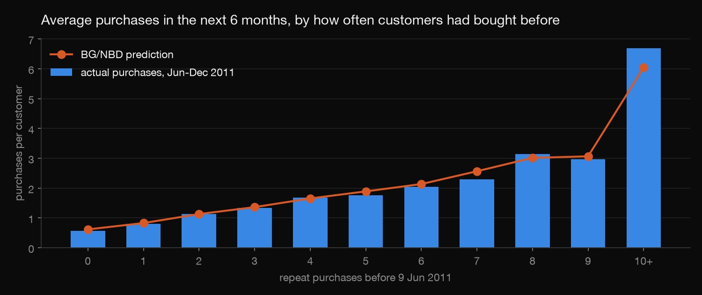
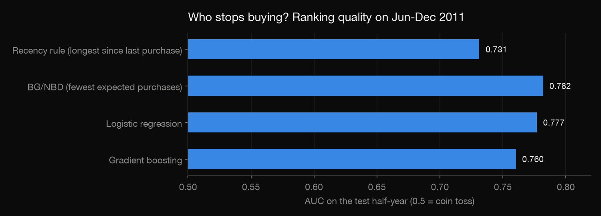
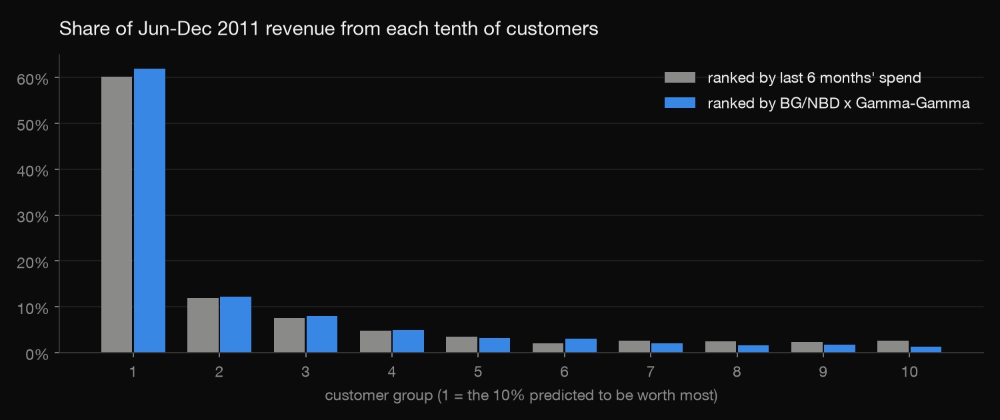

Python · Customer analytics · 2026-10
Who Will Buy Again?
Churn and customer lifetime value for a real online retailer: classic BG/NBD and Gamma-Gamma models written from the papers, against machine learning, on six months the models never saw.

Value here means revenue, not profit (no cost data). The models assume steady buying, so they under-predicted the Christmas run-up by 17%. Their ranking of customers held up; the totals didn't.
01 — The problem
A retailer wants to know two things about each customer: will they buy again, and what are they worth? The answers decide who gets a win-back offer and who gets left alone. Simple rules ("hasn't bought in a while") are the usual answer. The question here is whether a proper model does better, and whether it needs labelled churn data to do it.
02 — What I built
A Python project on the retail data from the dbt project (5,848 customers, Dec 2009 – Dec 2011):
- BG/NBD (how often each customer buys, and the chance they've quietly left) and Gamma-Gamma (how much they spend per order), written from the original papers. They need no churn labels.
- Supervised churn models (logistic regression, gradient boosting) trained on an earlier snapshot.
- An out-of-time test: predict from 9 June 2011, score on the next six months.
- A check that the code reproduces the papers' published numbers, and that the formulas match a 200,000-customer simulation.
03 — How it was built
- 01
Reproduce the papers before using the code
Hand-written statistical models are easy to get subtly wrong. So before touching the retail data, both models were fitted on the CDNOW dataset the papers used. They came out with the published parameters to the third decimal: BG/NBD r = 0.243, α = 4.414, a = 0.793, b = 2.426, and Gamma-Gamma p = 6.25, q = 3.74, γ = 15.44.
a1 = gammaln(r + x) - gammaln(r) + r * np.log(alpha) a2 = gammaln(a + b) + gammaln(b + x) - gammaln(b) - gammaln(a + b + x) a3 = -(r + x) * np.log(alpha + T) a4 = np.where(x > 0, np.log(a) - np.log(np.maximum(b + x - 1, 1e-12)) - (r + x) * np.log(alpha + t_x), -np.inf) return a1 + a2 + np.logaddexp(a3, a4) - 02
Turn sales into purchase days
From the dbt project's tested tables, each customer gets one row per day they bought: 32,597 purchase days in all. Cancellations made the same day are netted out, so an order placed and cancelled within minutes is not a purchase (281 days dropped).
- 03
Test on the future, not on a shuffle
Every method predicts from 9 June 2011 and is scored on 10 June – 9 December 2011, using only data from before the cutoff. The machine-learning models learn from a snapshot six months earlier, labelled by what happened next. BG/NBD and Gamma-Gamma just fit the purchase history up to the cutoff. A check confirms that deleting every later purchase changes none of the features.
- 04
Catch an optimiser that gave up
On the retail data, the first Gamma-Gamma fit returned p ≈ 36 million, a sign something was off. Profiling the likelihood showed the optimiser had stopped in a far worse corner (log-likelihood −23,059 against −22,493 at p = 2.41). Both fits now start from several points and keep the best, and the CDNOW replication still matches.
- 05
Read the results like a manager
Three charts: does the model get purchase counts right for each kind of customer, which method ranks churn best, and where next half-year's revenue comes from. Then a list: valuable customers the model thinks are slipping away.

04 — Results
| Jun – Dec 2011 (4,321 customers) | Churn AUC | 6-month value: rank corr. |
|---|---|---|
| Simple rule (recency · last 6 months' spend) | 0.731 | 0.550 |
| BG/NBD (× Gamma-Gamma for value) | 0.782 | 0.612 |
| Logistic regression | 0.777 | – |
| Gradient boosting | 0.760 | – |

- The model with no labels ranked churn best. The supervised models learned on a December–June window (53% churn) and were tested on June–December, which includes Christmas (43% churn). That shift hurt them more.
- Counts right, totals low: 7,428 purchases predicted vs 7,583 actual. Revenue came in 17% above the forecast because pre-Christmas orders averaged £561 against the £477 the models expected.
- Win-back list: 21 of the top 865 customers looked like they were slipping away. 62% of them did stop buying, vs 8.6% of the other top customers, with £163,633 of last year's revenue between them. It's a small group, so this is a signal, not a precise rate.
05 — What I'd do next
- Add seasonality (a Q4 effect) so the totals track Christmas.
- Score on several rolling cutoffs to put error bars on the comparison.
- Bring in margins so value means profit, not revenue.